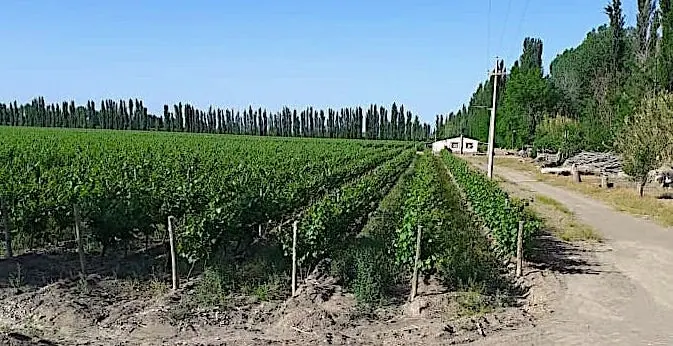
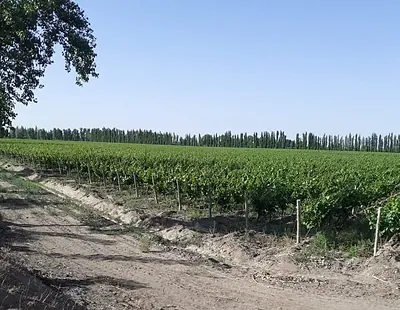
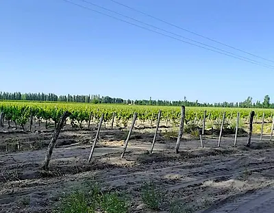
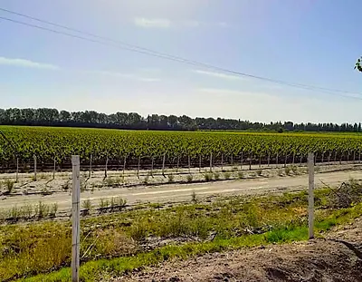

Algarrobal, San Rafael
Finca de 30 ha (74 acres), dont 28 ha (70 acres) de vignes, 2 maisons, etc.
Ce bien est déjà vendu. Il reste ici comme témoignage de ce qui s'est vendu et à quel prix. Demandez à Byron quelque chose de comparable.

Le propriétaire indique qu'il est prêt à accepter US$90 000 d'apport et à financer le solde de US$90 000 en 20 mensualités de US$4 500 chacune. DESCRIPTION
Cette finca se compose de 30 ha (74 acres) en trois parcelles distinctes au titre, à Algarrobal, à environ 20 minutes de San Rafael.
* Bonarda rouge (8 ans) – 37 acres * bonarda rouge (3 ans) – 13 acres * torrontés blanc (4 ans) – 20 acres

La récolte 2021 a atteint 350 000 kilos de raisin. La finca emploie deux ouvriers. Le propriétaire indique que l'un d'eux est extrêmement compétent et travaille sur l'exploitation depuis 20 ans.
La propriété est entièrement clôturée et compte deux maisons raccordées à l'électricité et à l'eau municipale. L'une est une maison d'ouvriers, l'autre une maison de propriétaire avec barbecue extérieur et espace de parc. Il y a également 2 hangars à toiture métallique, sols en béton et portes métalliques.
TRACTEUR ET OUTILS D'UNE VALEUR DE PLUSIEURS MILLIERS INCLUS

Les deux tracteurs inclus dans la vente sont un Universal (année 2000) en très bon état et un tracteur de vigne Fiat 400 (1974) en bon état. Les outils comprennent un pulvérisateur Puenche modèle 2000 d'une capacité de 1 000 litres.
Les outils comprennent également une herse à disques neuve de 16 disques à commande à distance, une herse à disques hydraulique de 14 disques, une charrue de vigne à 6 socs, une trancheuse, un chisel à 5 dents et une remorque à quatre roues.
Il y a de nombreux outils à main, 3 pulvérisateurs à dos, une débroussailleuse, des scies, etc.

La finca dispose de droits d'eau suffisants pour l'ensemble de la surface plantée.
La finca est membre de la coopérative vinicole Goudge pour l'élaboration et la vente du vin issu de l'exploitation. Cette adhésion sera transférée au nouveau propriétaire.
Les autres photos
Une photo supplémentaire de ce bien. Touchez-la pour l'agrandir.


{kind=link}
{kind=link}
{kind=link}
{kind=link}